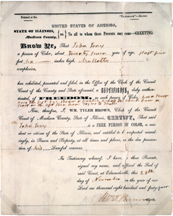
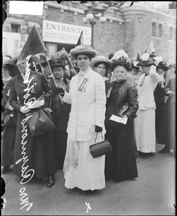
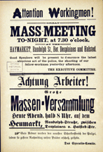
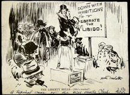
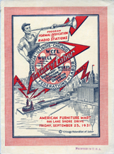
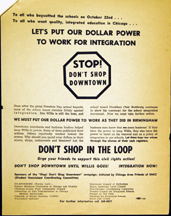
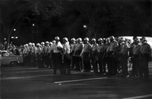
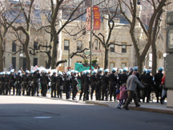

|
|
|
Exhibit Image Captions
|  |
Certificate of Freedom: Mary Jones.
Edwardsville, Ill., 1844.
The Chicago Historical Society.
(John Jones Papers).
In 1844, African
American abolitionist Mary Jones obtained this certificate of freedom in
Madison County, near her home in Alton, Illinois. On her journey north from
Alton to Chicago in 1845, authorities detained Mary Jones and her husband John,
believing they were fugitive slaves. Their coach driver vouched for them as
free. Upon moving to Chicago, the Jones zealously fought such restrictions
placed upon African Americans. |
|
"Mrs. Raymond Robins and a group of women suffragists standing
in front of the Coliseum." Chicago Daily News, Inc. Chicago, 1912. The Chicago
Historical Society. (ICHI DN-0059234).
Margaret Dreier Robins and
others advocate women's suffrage at the 1912 Republican National Convention in
front of the Chicago Coliseum. Robins, who moved to Chicago in 1905, was a
women's suffrage leader and president of the National Women's Trade Union
League, a progressive labor organization for women. |
 |
|  |
"Attention Workingmen!" Chicago, 1886.
The Newberry Library.
(Ruggles 12).
This is one of several versions of the broadsides issued
to publicize the May 4, 1886, rally in Haymarket Square. This version does not
include the statement "Workingmen arm yourselves and appear in full force,"
which would later be used to connect the organizers of the rally to the death
of Chicago policemen. |
|
"The Liberty Bell-(She's Cracked!)"
James Trembath. n.d.
The
Newberry Library. (Midwest MS Dill Pickle, Box 2, Folder 31).
This
cartoon from the 1920s pokes fun at so-called "flappers," who favored new
fashions in dress, hairstyles, and sexual behavior. At this time, the bohemian
cafes and speakeasies of Chicago's "Towertown" neighborhood were associated
with new thinking about sexuality and women's rights. A handwritten note on the
cartoon indicates that this was a "typical scene at the Dill Pickle
Club." |
 |
|  |
Program, Formal dedication of WCFL,
"The Voice of Labor."
Chicago Federation of Labor. Chicago, 1931.
The Chicago Historical Society.
(qF38PV WCFL Z).
In 1926, the Chicago Federation of Labor created the
radio station WCFL, known as the "Voice of Labor," to inform and organize
Chicago's working class. WCFL officially opened its new facility in 1931 with
festivities detailed in this program. Events to dedicate the studios included
Irish, Jewish, Lithuanian, and Polish themed performances. |
|
"Stop! Don't Shop Downtown: Let's Put Our Dollar to Work for
Integration." Chicago Area Friends of SNCC (Student Nonviolent Coordinating
Committee). Chicago, c. 1963.
The Newberry Library. (Chicago Sun-Times
Collection, Box 66B).
In the wake of the 1963 March on Washington,
Chicago's civil rights activists intensified their efforts to integrate schools
and businesses. This flyer calls on African Americans to boycott stores that do
not hire black workers. |
 |
|  |
"1968 Democratic National Convention."
Ed Wenjer. Chicago,
1968.
The Chicago Historical Society. (ICHI-20689).
During the 1968
Democratic National Convention in Chicago, student radicals and others clashed
with Chicago police. Protestors spoke out against the Vietnam War, poverty,
racism, and sexism, among other problems common in American society. After the
convention, a national commission investigating the riots squarely placed the
blame on law enforcement, calling the violence a "police riot." |
|
"M-20 Anti-War Protest 2004."
Jennifer L. Koslow. Chicago,
2004.
The Newberry Library.
One year after the U.S. invasion of Iraq,
protesters from around the region converged on Chicago to voice their continued
opposition to the war. Chicago police made a massive show of force as they had
during the protests a year earlier, when some 800 people were arrested.
|
 |
|
|